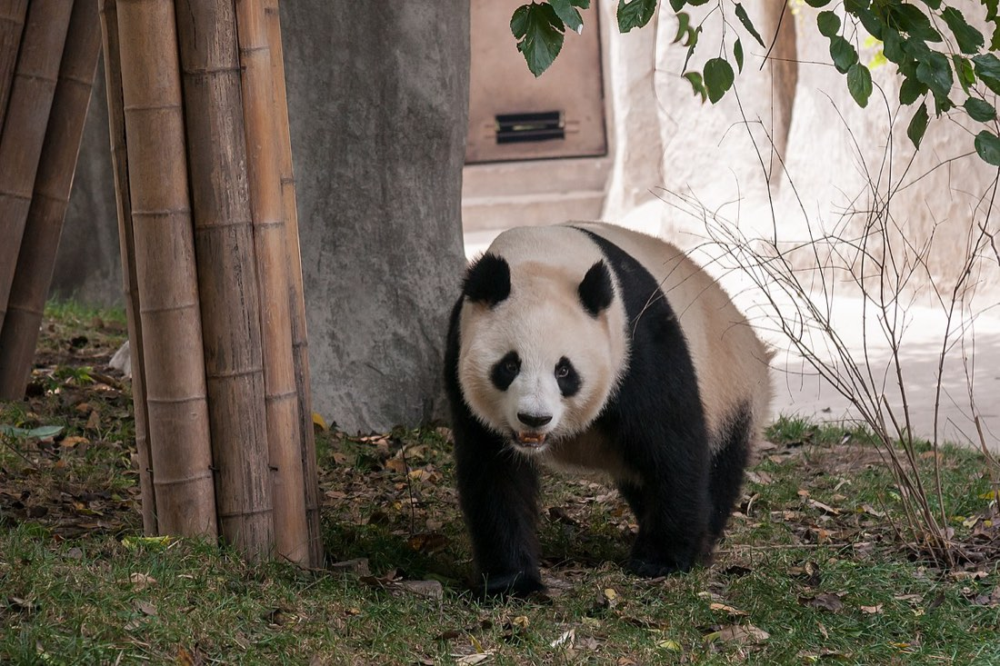
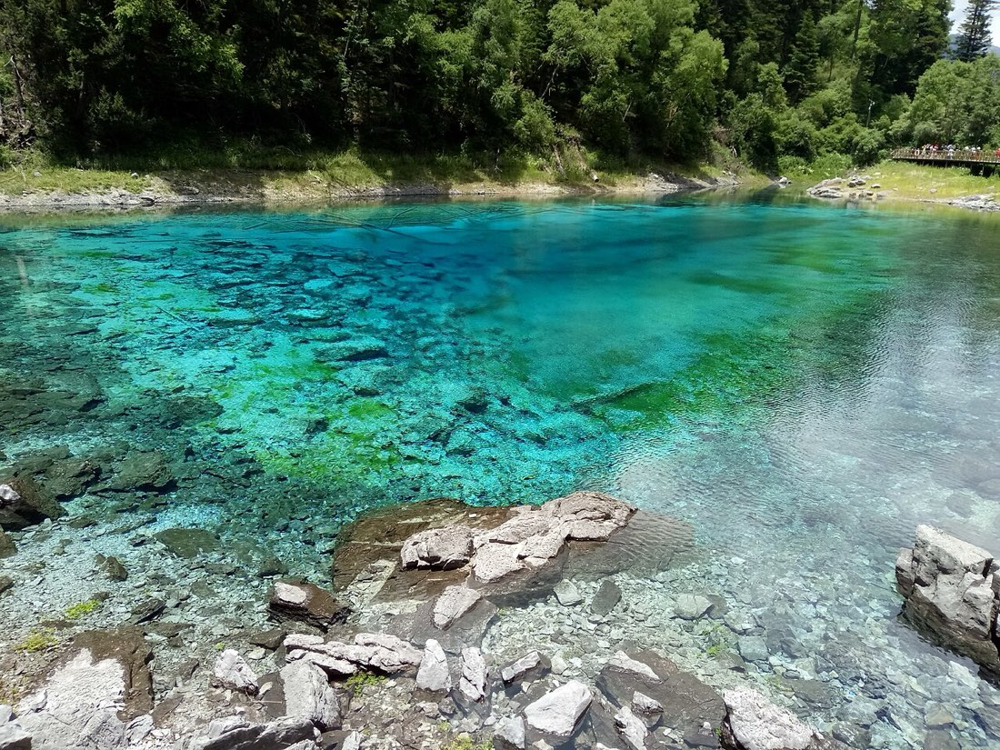
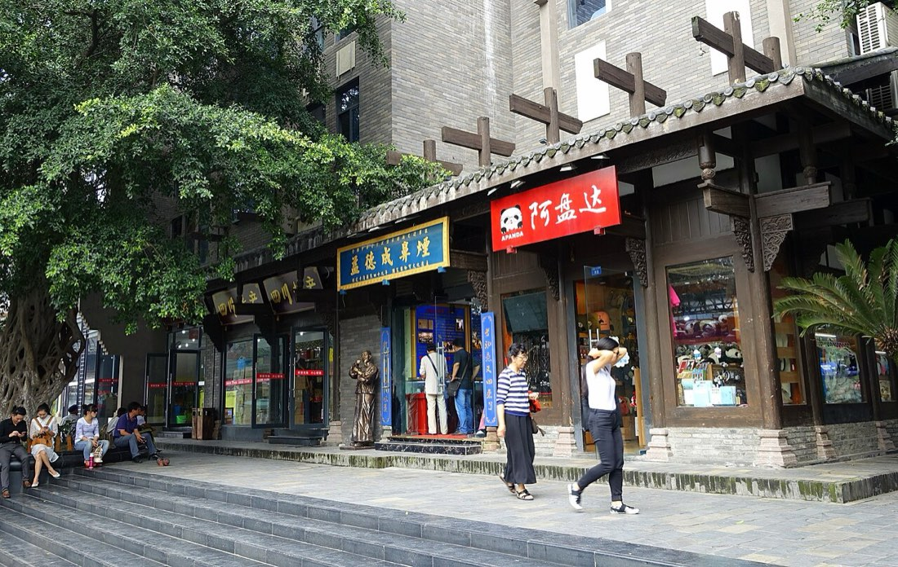
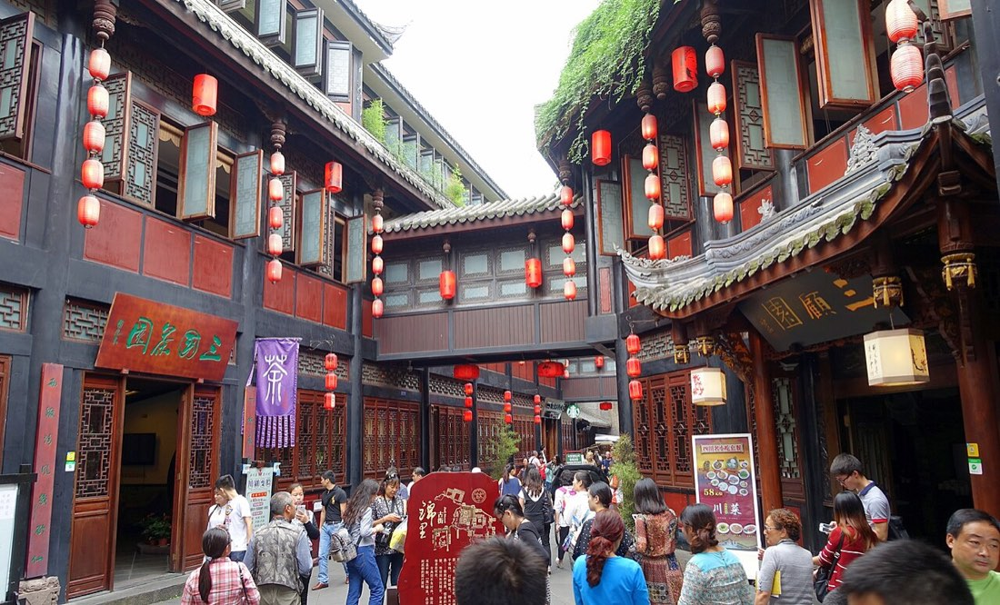
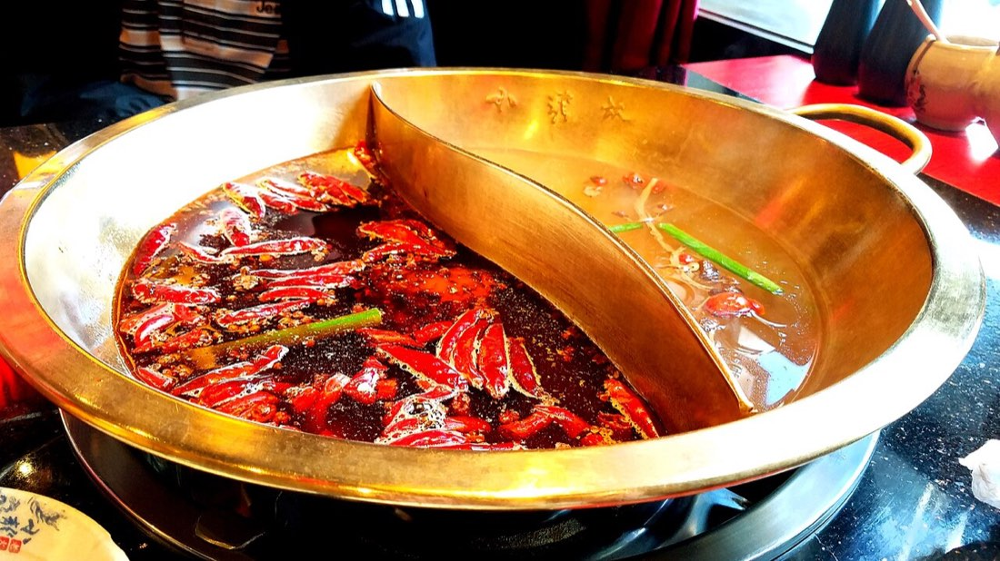
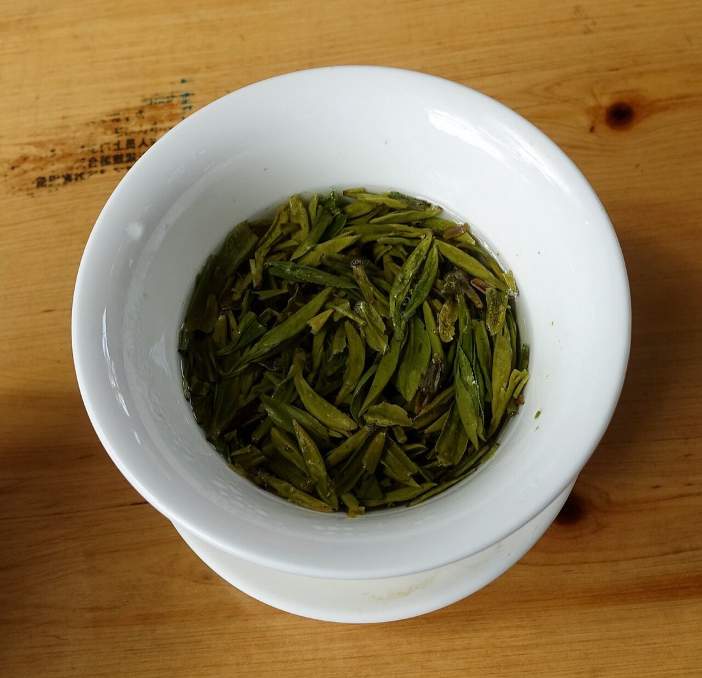
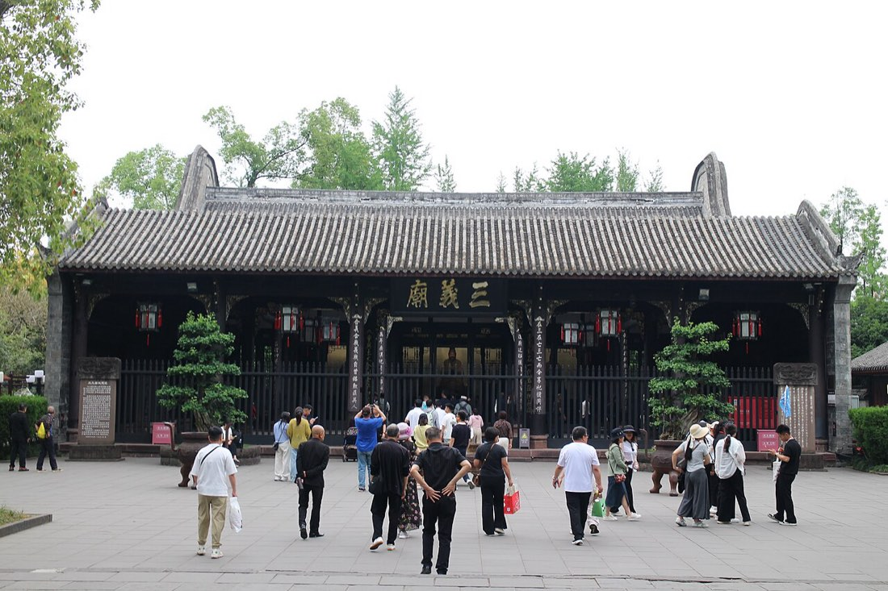
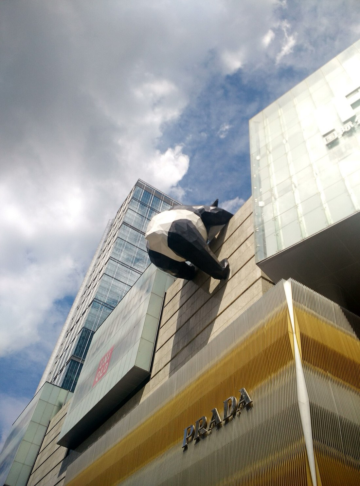
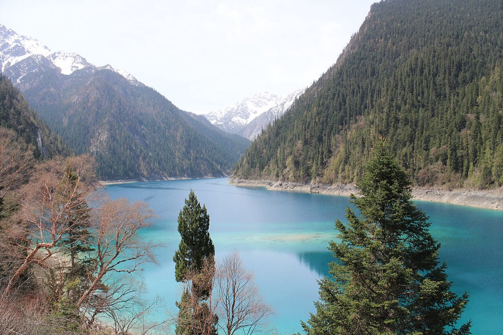

Family Travel Itinerary · Chengdu & Jiuzhaigou
청두·구채구 가족여행 일정표
청두 도심과 판다기지, 황룡과 구채구를 함께 둘러보는 6박 7일 가족여행 일정입니다. 항공·철도 이동, 날짜별 관광 동선, 입국 절차와 현지 이용 정보를 한 문서에 정리하였습니다.
- 여행 기간
- 2026.9.8 – 9.15
- 여행 인원
- 성인 5명
- 청두 숙소
- 가오신구
- 현지 연락
- 가족 공용 연락처
- 시차
- 한국보다 1시간 늦음
출발 전에 완료할 항목을 따로 정리하였습니다.
입장권, 바우처, 결제·통신 설정과 입국카드 작성은 준비 페이지에서 확인합니다.
출발 전 준비 보기
01. 전체 일정
표는 좌우로 밀어 전체 내용을 확인할 수 있습니다.
| 날짜 | 대상 | 주요 일정 |
|---|---|---|
| 9.8 화 | 부모님 | 인천 출발 · 청두 도착 · 숙소 이동 |
| 9.9 수 | 부모님 | 인민공원 · 콴자이샹쯔 · 가족 저녁 식사 |
| 9.10 목 | 부모님 | 무후사 · 진리 옛거리 · 가족 저녁 식사 |
| 9.11 금 | 전원 | 동생 부부 합류 · 춘시루 · 태고리 |
| 9.12 토 | 전원 | C16 탑승 · 황룡 관광 · 구채구 이동 및 숙박 |
| 9.13 일 | 전원 | 구채구 종일 관광 · C18 탑승 · 청두 복귀 |
| 9.14 월 | 전원 | 판다기지 · 휴식 및 출국 준비 · 공항 이동 |
| 9.15 화 | 전원 | 00:30 청두 출발 → 05:10 인천 도착 |
02. 여행 하이라이트





03. 항공 일정
표는 좌우로 밀어 전체 내용을 확인할 수 있습니다.
| 날짜 | 구간 | 출발 | 도착 | 편명 | 탑승자 |
|---|---|---|---|---|---|
| 9.8 화 | 인천 T2 → 청두 톈푸 T1 | 20:00 | 23:10 | OZ323 | 부모님 |
| 9.10 목 | 인천 T1 → 청두 톈푸 T1 | 22:35 | 익일 01:35 | CA442 | 동생 부부 |
| 9.15 화 | 청두 톈푸 T1 → 인천 | 00:30 | 05:10 | OZ324 | 부모님·동생 부부 |
귀국편은 9월 15일 00:30 출발입니다. 실제 공항 이동은 9월 14일 밤에 진행됩니다. 항공편명과 출발 시각은 발권된 e-티켓을 기준으로 확인합니다.
국제선 출발 3시간 전 공항 도착을 기준으로 합니다. 부모님은 9월 8일 17:00까지 인천공항 제2터미널, 동생 부부는 9월 10일 19:30까지 제1터미널에 도착합니다. 귀국일에는 9월 14일 21:30까지 톈푸공항 제1터미널에 도착합니다.
04. 중국 입국 안내
대한민국 일반여권 소지자는 관광 목적으로 30일 이내 체류할 경우 2026년 12월 31일까지 무비자 입국이 가능합니다. 입국 심사에는 여권과 온라인 입국카드 접수 화면을 준비합니다.
온라인 입국카드 작성 방법과 입력 정보는 출발 전 준비 페이지에 정리되어 있습니다.
톈푸공항 입국 절차
- 비행기에서 내려 International Arrival / 入境 표지판을 따라갑니다.
- 입국 심사대에서 여권과 온라인 입국카드 접수 화면을 제시합니다. 필요한 경우 현장에서 지문을 등록합니다.
- 수하물 수취 후 신고 물품이 없으면 녹색 통로를 이용합니다.
- 도착층으로 이동하여 픽업 담당자와 만납니다. 입국 및 수하물 수취에는 약 30~50분이 소요됩니다.
부모님 · 9월 8일 23:10 도착
- 도착층에서 가족과 합류합니다. 만나지 못한 경우 가족 공용 연락처로 전화합니다.
- 연락이 어려운 경우 공식 택시 승강장에서 아래의 숙소 이동 카드를 제시합니다. 숙소까지 약 1시간이 소요됩니다.
동생 부부 · 9월 11일 01:35 도착
- 심야 도착 시간에는 지하철 운행이 종료되어 공식 택시 또는 디디를 이용합니다.
- 공식 택시 승강장은 24시간 운영되며, 승차 시 아래의 숙소 이동 카드를 제시합니다.
05. 현지 이용 카드
개인정보 보호를 위해 공개 페이지에는 상세 숙소 주소와 가족 연락처를 표시하지 않습니다. 실제 이동 시 가족방에 공유된 비공개 주소 카드를 함께 사용합니다.
숙소 이동
请送我到这个地址。详细地址请看另一张地址卡。
택시 기사에게 가족방의 비공개 숙소 주소 카드를 함께 제시합니다.
판다기지 이동
请送我到：成都大熊猫繁育研究基地（南门）
청두 자이언트판다 번식연구기지 남문
기차역 이동
请送我到车票上写的火车站。车站名称请看电子车票。
e-티켓에 표시된 역명을 기사에게 함께 제시합니다.
시내 명소
宽窄巷子 콴자이샹쯔 · 武侯祠 무후사
人民公园 인민공원 · 春熙路 춘시루
人民公园 인민공원 · 春熙路 춘시루
원하는 목적지를 가리켜 기사에게 제시합니다.
전화 요청
我不会说中文。请帮我打这个电话：
“중국어를 하지 못합니다. 이 번호로 전화해 주십시오.”라는 문장입니다.
식당 주문
不要辣 부야오라 — 맵지 않게
鸳鸯锅 위안양궈 — 훠궈 반반냄비
鸳鸯锅 위안양궈 — 훠궈 반반냄비
맵지 않은 음식 또는 반반냄비를 요청할 때 사용합니다.
06. 결제·교통·통신 안내
알리페이 결제
- QR 스캔 결제: 첫 화면의 [Scan]에서 매장 QR을 촬영하고 금액을 입력합니다.
- 결제 코드 제시: [Pay/Collect]의 바코드를 직원에게 제시합니다.
- 해외카드 수수료는 카드 종류와 결제 금액에 따라 달라질 수 있으므로 결제 전 최종 금액을 확인합니다.
- 소액 현금은 통신 장애나 결제 오류에 대비한 비상용으로 준비합니다.
디디 택시 호출
- 알리페이의 [Transport] 메뉴에서 디디 미니앱을 실행합니다.
- 목적지는 중국어 명칭으로 입력하고 예상 요금을 확인한 후 차량을 호출합니다.
- 배차된 차량번호와 실제 도착 차량을 대조한 후 탑승합니다.
- 승차 위치를 기사에게 전달하기 어려운 경우 건물의 큰 출입구 또는 지정 승차 지점에서 대기합니다.
지도와 번역
- 가오더지도(Amap): 중국 내 대중교통과 차량 이동 경로 확인에 사용합니다.
- 파파고: 메뉴판은 이미지 번역 기능을 이용할 수 있습니다.
인터넷 이용
- 통신사 로밍 또는 홍콩 경유 eSIM을 이용하면 카카오톡과 국내 서비스를 비교적 안정적으로 사용할 수 있습니다.
- 현지 유심 또는 중국 내 와이파이에서는 일부 해외 서비스 접속이 제한될 수 있습니다.
- 와이파이에서 국내 서비스가 연결되지 않는 경우 로밍 또는 eSIM 데이터로 전환합니다.
07. 날짜별 상세 일정
9.8
화요일
부모님 도착
인천에서 청두로
- 17:00인천공항 2터미널 도착, 아시아나 카운터에서 수속 OZ323 · 20:00 출발
- 비행 중비행시간은 약 4시간이며, 심야 도착에 대비하여 기내에서 휴식합니다.
- 23:10톈푸공항 T1 도착 → 심사대(여권+QR) → 수하물 → 녹색 통로
- 24:00도착층에서 가족 합류 후 숙소 이동 차량 약 50분 · 01:00경 숙소 도착
한국과 청두의 시차는 1시간입니다. 도착 다음 날은 이동 피로를 고려하여 여유 있게 구성하였습니다.
9.9
수요일
부모님 낮 자유
인민공원 찻집과 콴자이샹쯔

- 10:00숙소 출발 후 디디로 인민공원 이동 人民公园 · 무료
- 10:301923년에 문을 연 허밍찻집에서 개완차를 즐기고 공원 풍경을 감상합니다.
- 12:30점심 식사 후 도보 약 10분 거리의 콴자이샹쯔를 둘러봅니다. 宽窄巷子 · 무료
- 15:30디디 또는 택시로 숙소 이동 후 휴식
- 19:00가족 저녁 식사 · 쓰촨 훠궈와 반반냄비 이용
9.10
목요일
부모님 낮 자유
무후사와 진리 옛거리

- 10:00디디로 무후사 이동 · 유비와 제갈량을 기리는 사당 및 붉은 담장길 관람 武侯祠 · 50위안 · 여권 지참
- 12:00인접한 진리 옛거리에서 점심 식사 및 자유 관람 锦里 · 무료
- 15:00숙소 이동 후 휴식
- 19:00가족 저녁 식사 · 천마파두부 또는 룽차오셔우
동생 부부는 같은 날 19:30까지 인천공항 제1터미널에 도착하여 CA442편 탑승 수속을 진행합니다.
9.11
금요일
전원 합류
동생 부부 합류, 저녁은 춘시루

- 01:35동생 부부 톈푸공항 도착 · 픽업 또는 택시로 숙소 이동 03:00경 숙소 도착 예정
- 오전휴식 및 숙소 인근 점심 식사
- 15:00춘시루·태고리 관광 · IFS 판다 조형물과 도심 거리 관람 春熙路·太古里 · 무료
- 18:00저녁 식사와 야경 관람 후 숙소 복귀 · 황룡·구채구 1박용 짐 정리
준비물 · 여권 원본, 1박용 가방, 보온용 겉옷, 우비, 미끄럼이 적은 운동화를 준비합니다. 큰 짐은 청두 숙소에 보관합니다.
9.12
토요일
황룡 · 구채구 이동
C16 탑승 · 황룡 관광 · 구채구 이동
- 출발 전e-티켓에 기재된 C16 출발역·시각·좌석을 확인하고, 열차 출발 40~50분 전까지 역에 도착합니다.
- C16청두 출발 → 황룡주자이역 도착 역 해발 약 2,977m
- 도착 후황룡주자이역 지정 집합장소에서 황룡 방면 셔틀에 탑승합니다.
- 오후황룡 관광지(黄龙风景名胜区)를 관람합니다. 바우처와 여권을 지참하며, 고도 적응을 위해 천천히 이동합니다.
- 관람 후셔틀 차량으로 구채구 방면 이동 후 바우처에 기재된 지정 지점에서 하차합니다.
- 저녁후이무윈 홀리데이 호텔 체크인 — 2베드룸 스위트, 5인 1실 九寨沟汇沐芸假日酒店 · 漳扎镇 룽캉단지 37호
- 21:00휴식 · 다음 날 07:00 출발 준비
9.13
일요일
구채구 관람
구채구 종일 관광
- 07:00구채구 입구 도착 · 여권 원본 확인 후 입장 대기
- 07:30관광차로 장해(长海) 이동 · 상부 구간부터 관람 시작
- 08:30장해에서 오채지(五彩池)까지 도보 이동
- 09:45관광차로 눠르랑 센터 환승 → 르쩌구 방면 상류로
- 10:15전죽해 → 판다해 → 오화해 → 진주탄폭포 → 경해 순서로 관람 도보 약 3~4시간 · 필요 시 관광차 이용
- 13:00눠르랑 센터에서 점심 (유일한 식사 지점)
- 14:00수정구 방면 — 눠르랑폭포·수정폭포 보며 하행
- 관람 후출구에서 차량 탑승 후 황룡주자이역 이동 C18 출발 시각을 기준으로 여유 있게 이동
- C18황룡주자이역 → 청두 출발·도착역과 시각은 e-티켓 기준
고산 유의사항 · 장해는 해발 약 3,100m에 위치합니다. 천천히 걷고 수분을 자주 섭취하며, 두통이나 메스꺼움이 심해질 경우 즉시 고도를 낮춥니다. 9월 아침 기온은 한 자릿수까지 내려갈 수 있으므로 보온용 겉옷과 우비를 준비합니다.
9.14
월요일
판다기지 · 출국
판다기지 관람 · 출국
- 07:30디디로 판다기지 남문 출발 약 30~40분
- 08:15여권 확인 후 입장 · 내부 셔틀로 상부 이동 후 도보 관람 먹이 활동이 활발한 08:00~10:00 관람 · 약 3시간
- 12:00숙소 복귀 · 점심 식사 · 휴식 · 출국 짐 정리
- 18:30가족 송별 저녁 식사
- 21:00톈푸공항 제1터미널 이동 · 항공편 탑승 수속
- 00:309월 15일 OZ324 출발 → 05:10 인천 도착
08. 황룡·구채구 이용 안내
구채구는 Y자 형태의 계곡으로 구성되어 있습니다. 입구에서 관광차를 이용해 상부로 이동한 뒤 눠르랑 센터를 기준으로 쩌차와구와 르쩌구를 나누어 관람합니다.

철도 이동
- 가는 편 · 9월 12일 C16 — 청두 → 황룡주자이
- 오는 편 · 9월 13일 C18 — 황룡주자이 → 청두
- 탑승 시 여권 원본을 지참하며, 외국인은 유인 개찰구를 이용합니다.
황룡·구채구 이동
- 9월 12일 · 황룡주자이역 → 황룡 관광지 → 구채구 순서로 이동합니다.
- 셔틀 집합 장소, 구채구 하차 지점, 황룡 입장권 및 케이블카 포함 여부는 이용 바우처를 기준으로 합니다.
- 9월 13일 · 구채구 입장권과 관광차 이용권을 사용하며, 입장 시 여권 원본을 제시합니다.
- 구채구 관람 후 차량으로 황룡주자이역까지 이동하며 C18 출발 시각을 기준으로 충분한 여유 시간을 확보합니다.
구채구 숙소
- 후이무윈 홀리데이 호텔 (九寨沟汇沐芸假日酒店) · 장자전 룽캉단지 37호 (漳扎镇隆康社区37号) · +86-139-8097-3758
- 9/12(토) 14:00 체크인 → 9/13(일) 12:00 체크아웃 · 2베드룸 3침대 스위트(60㎡, 2층) 1실 · 성인 5명
- 조식은 포함되지 않습니다. 9월 13일 이른 출발을 위해 전날 간단한 아침 식사를 준비합니다.
복장 및 건강 유의사항
- 9월 계곡은 아침 5~10도, 낮 20도 안팎으로 예상됩니다. 반팔 위에 플리스 또는 바람막이를 겹쳐 입고 우비와 미끄럼이 적은 운동화를 준비합니다.
- 황룡은 해발 3,000~3,500m 구간입니다. 음주와 빠른 보행을 피하고 수분을 충분히 섭취합니다.
- 두통, 메스꺼움, 호흡곤란이 심해질 경우 관람을 중단하고 즉시 고도를 낮춥니다.
09. 판다기지 이용 안내
기본 정보
- 성인 입장료는 55위안이며, 60세 이상은 여권 원본 제시 시 무료입니다. 개장 시각은 07:30입니다.
- 입장 시 여권 원본이 필요합니다. 입장권 준비 사항은 별도 준비 페이지에서 확인합니다.
- 남문으로 입장한 후 내부 셔틀을 이용해 상부로 이동하고, 도보로 내려오며 관람하는 동선입니다.
관람 안내
- 판다는 08:00~10:00 먹이 시간에 활동량이 많으므로 개장 직후 관람하는 것이 좋습니다.
- 대기 시간이 긴 새끼 판다관(월사간 分娩室 구역)을 먼저 관람합니다.
- 전체 관람에는 약 3시간이 소요되며 개인별 생수를 준비합니다.
10. 추천 식당
쓰촨 음식은 매운맛이 강한 편이지만 주문 시 “부야오라(不要辣, 맵지 않게)”라고 요청하면 맵기를 조절할 수 있습니다.
- 하이디라오 海底捞순한 선택 가능
토마토탕과 버섯탕 등 맵지 않은 육수를 함께 선택할 수 있어 가족 식사에 적합한 훠궈 체인입니다. - 샤오룽칸 小龙坎매운맛
청두식 훠궈를 대표하는 체인입니다. 반반냄비(鸳鸯锅)를 선택하면 맑은 육수와 매운 육수를 함께 이용할 수 있습니다. - 천마파두부 본점 陈麻婆豆腐보통
마파두부로 알려진 식당이며 궁바오지딩 등 비교적 덜 매운 요리를 함께 주문할 수 있습니다. 브레이크타임은 14:30~17:00입니다. - 룽차오셔우 龙抄手 (춘시루점)순한 선택 가능
완탕과 청두식 면 요리를 판매합니다. 맑은 국물의 칭탕차오셔우(清汤抄手)는 매운맛 부담이 적습니다. - 중수이자오 钟水饺순한맛
달콤한 간장소스를 곁들인 물만두로 알려져 있으며 춘시루 일대에 여러 지점이 있습니다. - 깅코 银杏 (진리중루)맵지 않음
무후사 인근의 고급 레스토랑으로 광둥식 딤섬과 비교적 순한 요리를 선택할 수 있습니다.
11. 비상 연락 안내
연락처
- 청두 가족 연락처: 가족방에 저장된 번호 · 한국 휴대전화에서는 국가번호 +86을 사용합니다.
- 중국 긴급: 경찰 110 · 구급차 120 · 화재 119
- 주청두 대한민국 총영사관: +86-28-8616-5800 (평일) · 긴급 +86-139-8095-6348
진장구 둥위제 18호 바이양빌딩 14층 (锦江区东御街18号百扬大厦14楼) - 외교부 영사콜센터 (24시간, 서울): +82-2-3210-0404
상황별 대응
- 여권 분실: 가까운 파출소(派出所)에 분실 신고 후 주청두 대한민국 총영사관에서 여행증명서 발급 절차를 진행합니다.
- 질병 또는 부상: 응급 상황은 120으로 신고하며, 종합병원은 쓰촨대 화서병원(四川大学华西医院)을 이용할 수 있습니다.
- 길을 잃은 경우: 공식 택시 또는 디디 기사에게 가족방의 비공개 숙소 주소 카드를 제시합니다.
- 국내 서비스 접속 불가: 와이파이를 끄고 로밍 또는 eSIM 데이터로 전환합니다.